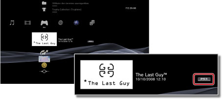

Jeu > Utilisation de jeux téléchargés à partir de PlayStation®Store > Utilisation des jeux téléchargés
Utilisation des jeux téléchargés
Vous pouvez utiliser des jeux que vous téléchargez (gratuitement ou en payant) à partir de  (PlayStation®Store). La procédure d'utilisation d'un jeu dépend du type de jeu. Des informations sur le type de jeu s'affichent en regard de son icône.
(PlayStation®Store). La procédure d'utilisation d'un jeu dépend du type de jeu. Des informations sur le type de jeu s'affichent en regard de son icône.

Conseil
Pour trier des jeux par type, sélectionnez une icône de jeu, appuyez sur la touche  , puis sélectionnez [Trier par] > [Format] dans le menu d'options.
, puis sélectionnez [Trier par] > [Format] dans le menu d'options.
Lecture d'un logiciel au format PlayStation®3

En général, vous pouvez lire un logiciel au format PlayStation®3 téléchargé à partir de (PlayStation®Store) de la même manière qu'un logiciel au format PlayStation®3 disponible sur disque. Pour plus de détails, reportez-vous à  (Jeu) > [Lecture d'un logiciel au format PlayStation®3] dans le présent mode d'emploi.
(Jeu) > [Lecture d'un logiciel au format PlayStation®3] dans le présent mode d'emploi.
Utilisation d'un logiciel au format PlayStation®
En général, vous pouvez lire un logiciel au format PlayStation® téléchargé à partir de (PlayStation®Store) de la même manière qu'un logiciel au format PlayStation® disponible sur disque. Pour plus de détails, reportez-vous à (Jeu) > [Lecture d'un logiciel au format PlayStation®2 / PlayStation®] dans le présent mode d'emploi.
Manuels du logiciel
Vous pouvez éventuellement afficher le manuel du logiciel au format PlayStation® que vous avez téléchargé. Pour cela, appuyez sur la touche PS de la manette sans fil pendant le jeu, puis sélectionnez [Manuel du logiciel] dans l'écran affiché.
Jeux qui nécessitent un changement de disque
Certains logiciels au format PlayStation® téléchargés exigent des changements de disque. Lorsque vous jouez à de tels jeux sur le système PS3™, le changement de disque est virtuel. Si un message vous invite à changer de disque, appuyez sur la touche PS de la manette sans fil, puis sélectionnez [Changer de disque] dans l'écran affiché. Suivez les instructions affichées pour achever l'opération.
Utilisation de jeux au format PC Engine
Pour plus de détails sur l'utilisation de jeux au format PC Engine, consultez le mode d'emploi qui accompagne le jeu. La méthode d'affichage du mode d'emploi peut varier en fonction du jeu. La disponibilité du format PC Engine peut dépendre du pays ou de la région.